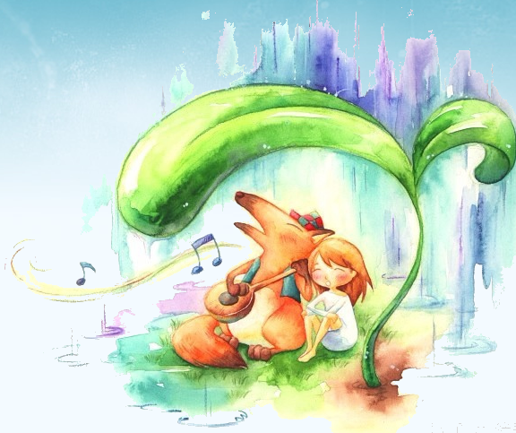

刚刚看了黄博士的《亲密之旅》，他谈到要做到一个好的倾听者非常不容易，因为在我们心中已经想好了要怎样回答倾诉者，并没有仔细听，也没有跟对方求证一下他所要表述的东西是不是我们所听到的那样，而是马上就把我们自己的意见强加过去，所以经常是沟而不通。
我发现越长大，跟自己的有些朋友，我越不是一个好的倾听者。我没有耐心，就想赶紧把问题处理掉，然后回去干自己的事情。可能是自己根本没有余力来处理这些事情吧。
每次那一位朋友来找我，这个在我的眼里是老生常谈。其实她父亲在高中时候就去世了，然后受到了强烈的打击，什么都要靠自己。本就自卑的她更加自卑，没有自信面对一切。可能因为我也是受伤者之一。因为在那两年之间发生了一些连串很奇怪的事情——几个相近的村子都纷纷得怪病，然后就是年轻人去世。看似来很健康的人也是这样。在我身上没有幸免。我外婆也是这样。

这样就造就了我跟她相怜之处，并且很快的成为了好朋友——诉苦的朋友。上了大学，好几年过去了，还是一样遇到事情就来找我“诉苦”，也就是发泄下自己的苦闷吧，比较内向的她没地方说就来找我的。可是到后来，我自己也是健康的身体突然来个生病。自己愁闷的时候，我没有到处说，却也依旧得到她的再一次诉苦，我发现并没有那么强大的我，没有共情的能力，我觉得都几年的事情嘛，早都该翻篇了。其实自己告诉自己，我内心也需要一个强大的后背来让我依靠啊。